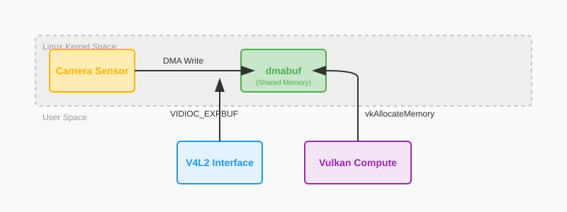

Camera Integration: The Zero-Copy Pipeline
In a desktop application, camera integration is often treated as a solved problem—you use a library like OpenCV, grab a frame with a single function call, and upload it to the GPU. On a high-end PC with 32GB of RAM and a 300W GPU, you can afford to be sloppy. But in the world of Embedded Systems, sloppy code is a death sentence for your product.
A standard 1080p RGB frame takes of memory. If you use the "Desktop Way"—copying that frame from the kernel to user-space, then from OpenCV to a Vulkan staging buffer, and finally to the GPU—you have moved 18MB of data for every single frame. At 60 FPS, that is over 1 GB/s of memory bandwidth just for "moving pixels around." On a Raspberry Pi or a Jetson Nano, this bandwidth tax is enough to saturate the memory bus, causing your ML inference to crawl, your frame rate to drop, and your SoC to overheat.
In this chapter, we are going to learn the "Holy Grail" of embedded vision: the Zero-Copy Pipeline. We will explore how to use V4L2 and dmabuf to feed pixels directly from the sensor into Vulkan compute shaders without a single CPU-side memory copy.
The V4L2 Foundation: Talking to Sensors
Linux uses the Video for Linux 2 (V4L2) API to interface with cameras. To get maximum speed, we avoid the naive read() call (which performs a slow kernel-to-user copy) and use Streaming I/O with Memory Mapping (MMAP).
The IOCTL Lifecycle: Managing the Sensor
Communication with V4L2 happens via ioctl (Input/Output Control) calls. A production camera pipeline follows a strict sequence of state transitions that you must manage manually.
| IOCTL Command | Purpose |
|---|---|
|
Set the pixel format (e.g., YUYV) and resolution. |
|
Allocate a pool of buffers in the kernel. |
|
Get the physical memory offset for each buffer. |
|
The Magic Step: Export the buffer as a |
|
Give a buffer to the kernel to be filled by the sensor. |
|
Start the sensor’s DMA engine. |
|
Retrieve a filled buffer from the kernel. |
Deep Dive: Buffer Negotiation
Before you can stream, you must negotiate the number of buffers with the kernel. For high-speed ML, we typically use Triple Buffering (3 buffers) or Quad Buffering (4 buffers).
-
Buffer 1: Being filled by the camera sensor (Hardware ownership).
-
Buffer 2: Being processed by the Vulkan ML engine (GPU ownership).
-
Buffer 3: Waiting in the queue to be filled next.
This pipelining ensures that the sensor never has to wait for the GPU, and vice-versa.
// Request 4 buffers from the kernel
v4l2_requestbuffers req = {
.count = 4,
.type = V4L2_BUF_TYPE_VIDEO_CAPTURE,
.memory = V4L2_MEMORY_MMAP
};
if (ioctl(fd, VIDIOC_REQBUFS, &req) < 0) {
perror("Requesting buffers failed");
}Initializing the Device
Before we can stream, we must find the correct /dev/videoX node and configure it. Embedded devices often have multiple nodes (e.g., /dev/video0 for the sensor, /dev/video1 for metadata). You can use the v4l2-ctl tool to inspect your hardware:
# List all video devices and their capabilities
v4l2-ctl --list-devices
# List supported formats for /dev/video0
v4l2-ctl -d /dev/video0 --list-formats-ext// 1. Open the camera device
// We open in Read/Write mode because ioctls require both.
int fd = open("/dev/video0", O_RDWR);
// 2. Set Format (YUYV 1080p)
// YUYV is the native format for most MIPI CSI cameras.
v4l2_format fmt = {
.type = V4L2_BUF_TYPE_VIDEO_CAPTURE,
.fmt = { .pix = {
.width = 1920,
.height = 1080,
.pixelformat = V4L2_PIX_FMT_YUYV,
.field = V4L2_FIELD_NONE
}}
};
if (ioctl(fd, VIDIOC_S_FMT, &fmt) < 0) {
throw std::runtime_error("Failed to set V4L2 format");
}Memory Mapping (MMAP) vs. DMA-BUF
V4L2 supports two primary ways to access memory: 1. V4L2_MEMORY_MMAP: The driver allocates memory in the kernel. You "map" it into your process. This is great for CPU-only processing. 2. V4L2_MEMORY_DMABUF: You allocate memory (e.g., in Vulkan) and give the File Descriptor to the camera.
In this chapter, we will use the Export MMAP to DMA-BUF path. This is the most widely supported method because it allows the camera driver (which knows its own alignment requirements) to allocate the memory, which we then simply "import" into Vulkan.
The Zero-Copy Secret: dmabuf
A dmabuf is a kernel-level handle to a piece of physical RAM. Think of it as a pointer that can cross the border between different hardware drivers. By exporting a V4L2 buffer as a dmabuf, we can tell the GPU: "Don’t allocate your own memory; just look at the memory at this physical address."

Phase 1: Exporting from V4L2
We ask the camera driver for a file descriptor that represents the physical memory of a specific buffer.
v4l2_exportbuffer expbuf = {
.type = V4L2_BUF_TYPE_VIDEO_CAPTURE,
.index = i // The index of the buffer (usually 0 to 3)
};
if (ioctl(fd, VIDIOC_EXPBUF, &expbuf) < 0) {
perror("Exporting dmabuf failed");
}
// This integer is a standard File Descriptor.
// You can send it to other processes or drivers!
int sharedFd = expbuf.fd;Phase 2: Importing into Vulkan
We tell Vulkan that we want to use this external memory. This requires the VK_KHR_external_memory_fd extension.
// 1. Define External Memory Properties
// We tell Vulkan that this memory comes from a DMA-BUF handle.
vk::ImportMemoryFdInfoKHR importInfo{
.handleType = vk::ExternalMemoryHandleTypeFlagBits::eDmaBufEXT,
.fd = sharedFd
};
vk::MemoryAllocateInfo allocInfo{
.pNext = &importInfo,
.allocationSize = bufferSize, // This must match the V4L2 buffer length
.memoryTypeIndex = findDmabufCompatibleMemoryType()
};
// 2. Allocate 'External' Memory
// Note: Vulkan now 'shares' ownership of the memory with the kernel.
// It does not perform a copy; it simply maps the physical address.
vk::raii::DeviceMemory vulkanMemory = device.allocateMemory(allocInfo);
// 3. Bind to a Linear Image
// Camera sensors write data in 'Linear' order (pixel by pixel).
// Most GPUs prefer 'Tiled' order, but we MUST use linear here.
vk::ImageCreateInfo imageInfo{
.imageType = vk::ImageType::e2D,
.format = vk::Format::eG8B8G8R8G8B8G8R8_422_Unorm, // YUYV
.tiling = vk::ImageTiling::eLinear,
.usage = vk::ImageUsageFlagBits::eSampled,
.extent = {1920, 1080, 1}
};
vk::raii::Image cameraImage = device.createImage(imageInfo);
cameraImage.bindMemory(*vulkanMemory, 0);The Payoff: You have achieved CPU savings. The pixels land in RAM, and the GPU reads them from that exact same RAM. The CPU never touches a single byte of the image.
Understanding YUV: The Embedded Reality
Embedded sensors rarely output RGB. They usually output YUV422 (YUYV). This is an artifact of television history that remains useful today because it allows for simple compression. You can explore the various YUV format variations to understand their memory layouts. The human eye is much more sensitive to brightness (Luminance) than color (Chrominance).
The Macropixel Layout
In a YUYV stream, pixels are packed in pairs to save space. Every 4 bytes contains two pixels:
[Y0, U, Y1, V]
-
Pixel 0 is reconstructed using
(Y0, U, V). -
Pixel 1 is reconstructed using
(Y1, U, V).
This means the color (U and V) is shared between two adjacent pixels. This reduces the bandwidth by 33% compared to RGB888. However, it means your Vulkan shader cannot just read a vec4. It must understand the layout.
The YUYV-to-RGB Mathematics
We use the BT.601 color space coefficients. The transformation from normalized YUV ] to RGB is a linear matrix multiplication:
(Note: We subtract 0.5 from U and V because chrominance is signed, centered around 0.5 in the normalized range).
Advanced: The NV12 Multi-Planar Challenge
While YUYV is common for USB cameras, high-performance MIPI CSI sensors often use NV12.
In NV12, the image is split into two separate memory planes:
-
Luma (Y) Plane: A full-resolution grayscale image.
-
Chroma (UV) Plane: A half-resolution (2x2 subsampled) plane where U and V are interleaved.
This format is even more efficient for the memory bus, but it requires that we import two separate DMA-BUFs (or one DMA-BUF with two offsets) into Vulkan.
// Importing a multi-planar NV12 image
vk::ExternalFormatANDROID externalFormat{ .externalFormat = 0 }; // Vendor specific
vk::ImageCreateInfo imageInfo{
.pNext = &externalFormat,
.imageType = vk::ImageType::e2D,
.format = vk::Format::eG8B8R8_2Plane420Unorm, // NV12
.extent = {1920, 1080, 1},
.usage = vk::ImageUsageFlagBits::eSampled
};Using VK_KHR_sampler_ycbcr_conversion
Doing YUV conversion in a shader (as shown below) is portable, but many embedded GPUs (like ARM Mali) have Fixed-Function YUV Hardware. If you use the VK_KHR_sampler_ycbcr_conversion extension, the GPU hardware will perform the conversion during the texture fetch, costing zero shader instructions.
-
Create a Conversion Object: Define the color space (BT.601) and the chroma sitting.
-
Create a Sampler: Attach the conversion object to the sampler.
-
Sample in GLSL: Use
texture()normally; the result is automatically RGB!
// With Ycbcr conversion, this sampler returns RGB directly!
layout(set = 0, binding = 0) uniform sampler2D cameraTexture;
void main() {
vec3 rgb = texture(cameraTexture, uv).rgb;
// No manual math required!
}The "All-In-One" Preprocessing Shader
The real power of Vulkan is that we can combine Format Conversion, Bilinear Resizing, and ImageNet Normalization into a single compute pass. This is significantly faster than doing them as separate steps.
#version 450
layout(local_size_x = 16, local_size_y = 16) in;
// Our dmabuf-backed camera frame
layout(set = 0, binding = 0) uniform sampler2D cameraTexture;
// The output tensor for ONNX Runtime
layout(set = 0, binding = 1) writeonly buffer Output { float data[]; } mlTensor;
void main() {
ivec2 pos = ivec2(gl_GlobalInvocationID.xy);
if (pos.x >= targetWidth || pos.y >= targetHeight) return;
// 1. Hardware-Accelerated Bilinear Sample
// We sample from the normalized UV coordinate.
// The GPU's fixed-function texture units handle the interpolation for us.
vec2 uv = (vec2(pos) + 0.5) / vec2(targetWidth, targetHeight);
vec3 yuv = texture(cameraTexture, uv).rgb;
// 2. Manual YUV -> RGB
// We implement the math ourselves to avoid driver bugs with YCbCr extensions.
vec3 rgb;
rgb.r = yuv.x + 1.402 * (yuv.z - 0.5);
rgb.g = yuv.x - 0.344 * (yuv.y - 0.5) - 0.714 * (yuv.z - 0.5);
rgb.b = yuv.x + 1.772 * (yuv.y - 0.5);
// 3. Normalization (ImageNet constants)
// Most models expect pixels to be centered around zero with unit variance.
vec3 normalized = (rgb - vec3(0.485, 0.456, 0.406)) / vec3(0.229, 0.224, 0.225);
// 4. Planar NCHW Write
// ONNX Runtime expects Red plane, then Green plane, then Blue plane.
uint planeSize = targetWidth * targetHeight;
uint pixelIdx = pos.y * targetWidth + pos.x;
mlTensor.data[0 * planeSize + pixelIdx] = normalized.r;
mlTensor.data[1 * planeSize + pixelIdx] = normalized.g;
mlTensor.data[2 * planeSize + pixelIdx] = normalized.b;
}Cross-Driver Synchronization: The Handshake
The Camera sensor and the GPU are two independent processors working on the same "Desk" (Memory). If the GPU starts reading while the Camera is still writing, you get Tearing (top half of frame is new, bottom half is old).
Using dma_buf_sync
On Linux, we use the DMA_BUF_IOCTL_SYNC to tell the kernel about our intentions. This flushes the CPU/Sensor caches so the GPU sees fresh data.
// 1. BEFORE GPU READS: Tell kernel to flush sensor caches
// This is mandatory on ARM Mali and Adreno GPUs.
struct dma_buf_sync sync_start = { .flags = DMA_BUF_SYNC_START | DMA_BUF_SYNC_READ };
ioctl(sharedFd, DMA_BUF_IOCTL_SYNC, &sync_start);
// 2. EXECUTE VULKAN COMPUTE JOB
// We use a timeline semaphore to signal when Vulkan is finished.
submitVulkanInference(cameraImage);
// 3. AFTER GPU FINISH: Tell kernel we are done
struct dma_buf_sync sync_end = { .flags = DMA_BUF_SYNC_END | DMA_BUF_SYNC_READ };
ioctl(sharedFd, DMA_BUF_IOCTL_SYNC, &sync_end);ISP vs. GPU: Where to Resize?
Embedded SoCs often have an Image Signal Processor (ISP). The ISP is a dedicated hardware block designed specifically for camera data. It can perform resizing, rotation, and color conversion using almost zero power.
-
ISP Pros: Zero GPU usage, extremely low power draw.
-
ISP Cons: ISP drivers are often proprietary (like Broadcom’s on the Pi) and can be difficult to integrate into a standard Vulkan flow.
-
The Professional Strategy: Use the ISP for the primary downscale (e.g., 4K sensor data down to a 1080p
dmabuf) and use the Vulkan compute shader for the final ML-specific crop and normalization.
Troubleshooting: Common Pitfalls
-
Cache Incoherency: If your ML model sees flickering artifacts, your
dma_buf_synccalls are likely missing. Never assume the hardware is "unified" just because it shares a RAM stick—caches are often private to the CPU or GPU. -
Handle Leakage: Every
VIDIOC_EXPBUFcall creates a new file descriptor in your process table. You must callclose(sharedFd)when you are finished, or your application will eventually hit the process limit and crash. -
Memory Alignment: Many camera drivers require that the width of the image be a multiple of 16 or 32. If your sensor is 1920 wide but the driver pads it to 1936, your Vulkan UV coordinates will be shifted, and your AI will see "diagonal streaks."
Summary: The Zero-Copy Checklist
-
V4L2 MMAP: Request a pool of 4 buffers from the sensor driver.
-
dmabuf Export: Get a File Descriptor for each physical buffer.
-
Vulkan Import: Import those FDs into
VkDeviceMemoryusing external memory extensions. -
Fused Compute: Perform resize + color conversion + normalization in a single 1ms pass.
-
Sync IOCTL: Use
dma_buf_syncbefore and after every frame to maintain cache coherency.
By mastering the zero-copy pipeline, you’ve removed the primary performance bottleneck in embedded vision. Your application is now faster, cooler, and capable of real-time AI on low-power silicon.
Next, we will look at how to manage the physical limits of our hardware using Power and Thermal Optimization.